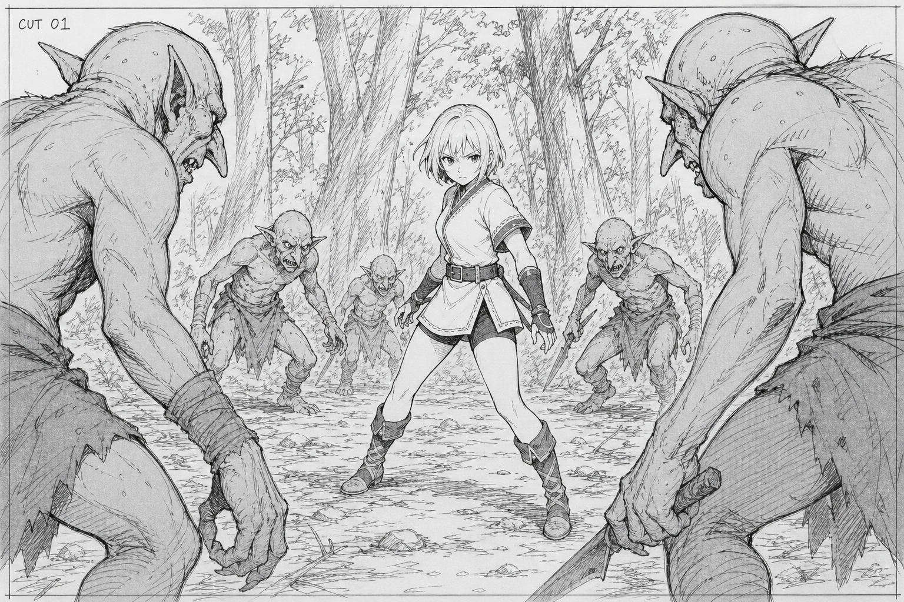
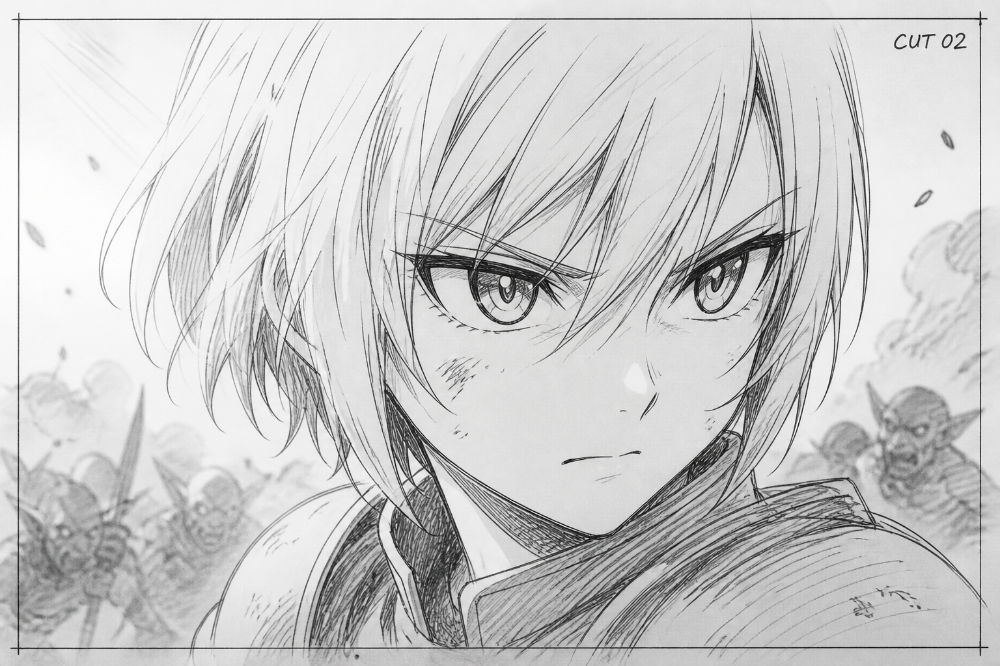
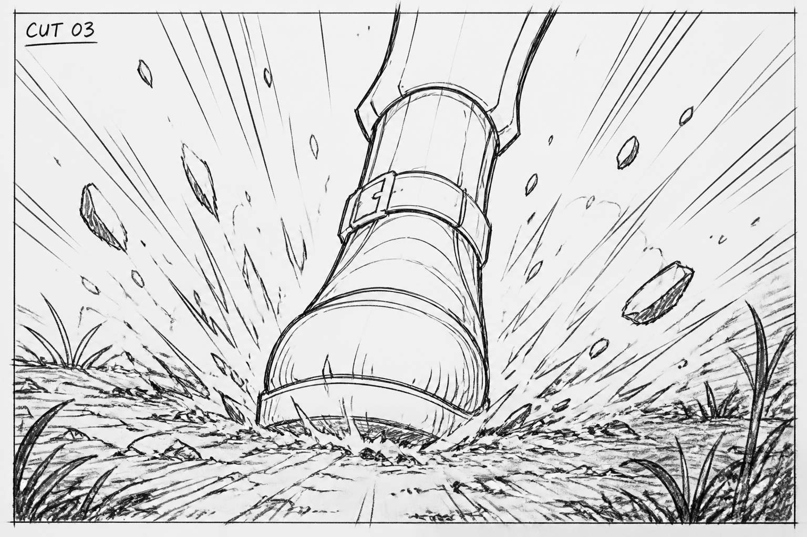
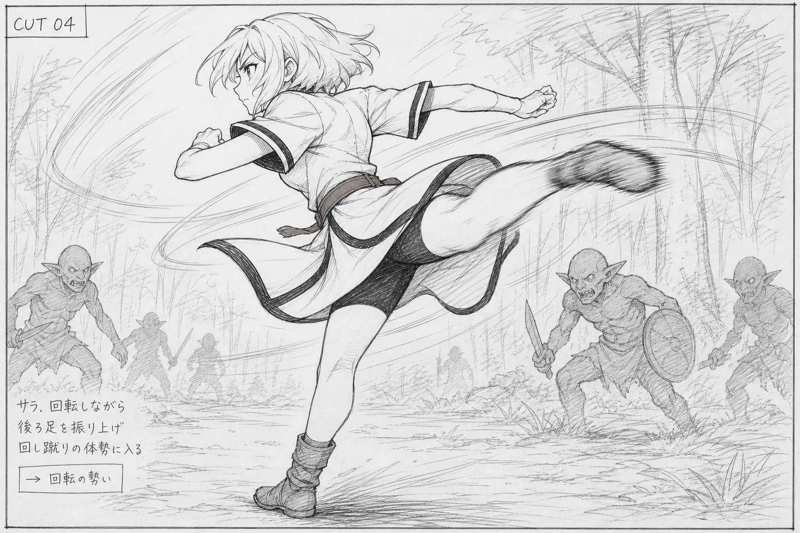
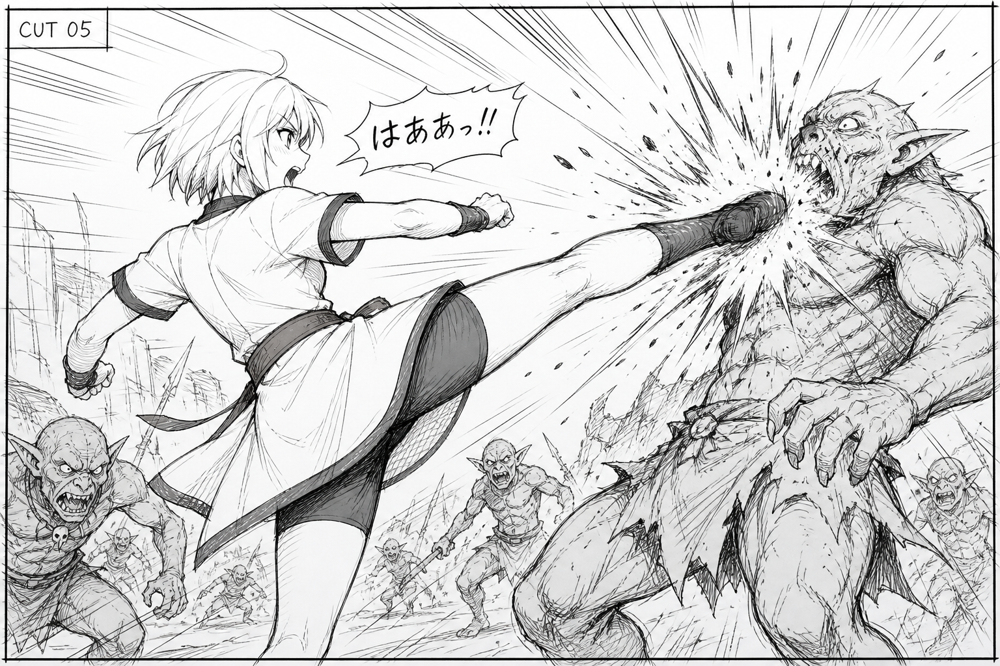
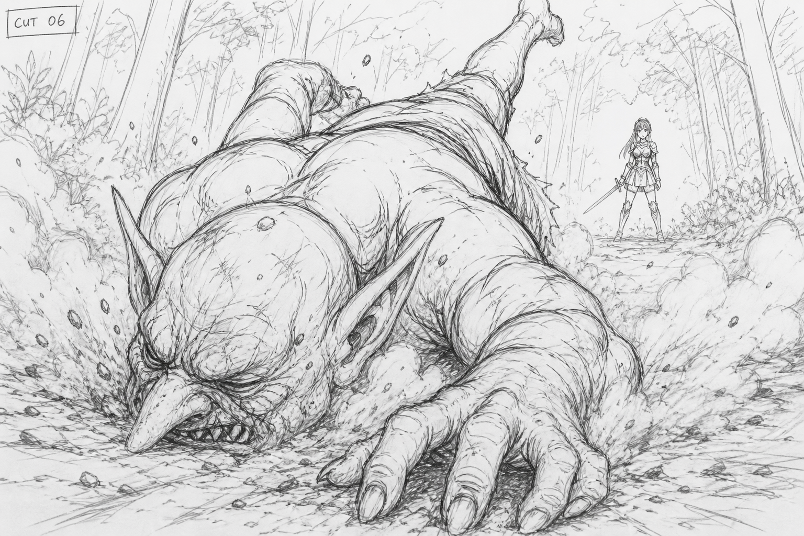
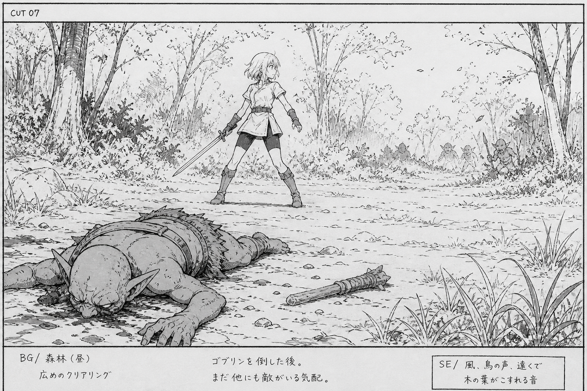

CUT 01
原作 1コマ目（右上・大縦コマ）
| 尺 | 2.0秒（00:00:00 - 00:02:00） |
|---|---|
| サイズ | やや引き。戦士を中央、手前のゴブリンで囲む |
| カメラ | ロー気味固定 → ゆっくりプッシュイン |
| 内容 | 女戦士がゴブリン複数に包囲される。まだ打たない。低い構え |
| セリフ | ゴブリン側。ファンタジー言語（意味は不明でよい。威嚇） |
| SE | 低いうなり、葉擦れ、空気の緊張 |
| 演出 | 人数と危機を最初に見せる。次カットの顔へつなぐ |
漫画の4コマを、映像の時間軸に合わせて7カットへ分解した。読み順は漫画どおり右上からだが、映像は時系列の順に進める。
流れは「囲まれる → 決意 → 踏み込む → 旋回 → 蹴る → 倒す → 次へ備える」。

CUT 01
原作 1コマ目（右上・大縦コマ）
| 尺 | 2.0秒（00:00:00 - 00:02:00） |
|---|---|
| サイズ | やや引き。戦士を中央、手前のゴブリンで囲む |
| カメラ | ロー気味固定 → ゆっくりプッシュイン |
| 内容 | 女戦士がゴブリン複数に包囲される。まだ打たない。低い構え |
| セリフ | ゴブリン側。ファンタジー言語（意味は不明でよい。威嚇） |
| SE | 低いうなり、葉擦れ、空気の緊張 |
| 演出 | 人数と危機を最初に見せる。次カットの顔へつなぐ |

CUT 02
原作 1コマ目から切り出し
| 尺 | 0.8秒（00:02:00 - 00:02:20） |
|---|---|
| サイズ | バストアップ〜顔アップ |
| カメラ | わずかに寄る。ブレなし |
| 内容 | 決意の表情。視線は正面の敵へ |
| セリフ | なし。短い吐息のみ |
| SE | 環境音を落とす。心拍に近い低音を一瞬 |
| 演出 | 「囲まれた被害者」から「攻撃する側」へ切り替える |

CUT 03
原作 2コマ目（左上・小横コマ）
| 尺 | 0.4秒（00:02:20 - 00:03:05） |
|---|---|
| サイズ | 足元の大アップ。ローアングル |
| カメラ | 接地の瞬間に小さくシェイク |
| 内容 | 軸足が地面を踏む。砂と小石が跳ねる |
| セリフ | なし |
| SE | タンッ（乾いた短い踏み込み音） |
| 演出 | 漫画の小さなコマと同じく、動作のきっかけだけを切る。ここでリズムを速くする |

CUT 04
原作 3コマ目の直前（漫画では省略されている間）
| 尺 | 0.8秒（00:03:05 - 00:04:00） |
|---|---|
| サイズ | 全身。横位置 |
| カメラ | 回転に合わせて短いパン |
| 内容 | 軸足で旋回。蹴り足が上がる。髪と上衣が流れる |
| セリフ | なし（次カットの掛け声の吸い込み） |
| SE | 衣擦れ、風切り |
| 演出 | 漫画は着弾だけを描くので、映像では予備動作を1拍足す |

CUT 05
原作 3コマ目（中央・横長コマ） このページの頂点
| 尺 | 1.5秒（00:04:00 - 00:05:12） |
|---|---|
| サイズ | ワイド。横からの全身〜腰上 |
| カメラ | 着弾で強いシェイク。ヒット瞬間は2〜3フレ止め |
| 内容 | 回し蹴りがゴブリンの胴（または顎）に入る。衝撃波 |
| セリフ | 女戦士「はぁッ!!」 |
| SE | ガッ（太い打撃）。掛け声と同時か、1フレ遅れ |
| 演出 | 一番大きく、一番長く。残敵は背景に残し、戦いが未完だと示す |

CUT 06
原作 4コマ目の前景
| 尺 | 1.5秒（00:05:12 - 00:07:00） |
|---|---|
| サイズ | ロー。倒れるゴブリンを手前に大きく |
| カメラ | 落下に合わせてわずかにティルトダウン |
| 内容 | ゴブリンがうつ伏せに落ち、土煙が立つ。奥に戦士の小さな姿 |
| セリフ | なし |
| SE | ドサッ（重い落地）。土の音 |
| 演出 | 打撃の結果を身体の重さで見せる。手前＝結果、奥＝次の主体 |

CUT 07
原作 4コマ目（下段・横長コマ）
| 尺 | 3.0秒（00:07:00 - 00:10:00） |
|---|---|
| サイズ | 引き。前景に死体、中景に戦士 |
| カメラ | ゆっくり引き。戦士の目線方向へわずかにパンしてもよい |
| 内容 | 1体は倒れた。戦士は残敵を見て、次の間合いへ歩いて立つ |
| セリフ | なし |
| SE | ザッ（短い足音）。草のざわめき。残敵の低い息 |
| 演出 | 完結させない。次ページ／次カットがある余韻で黒 or 次シーンへ |